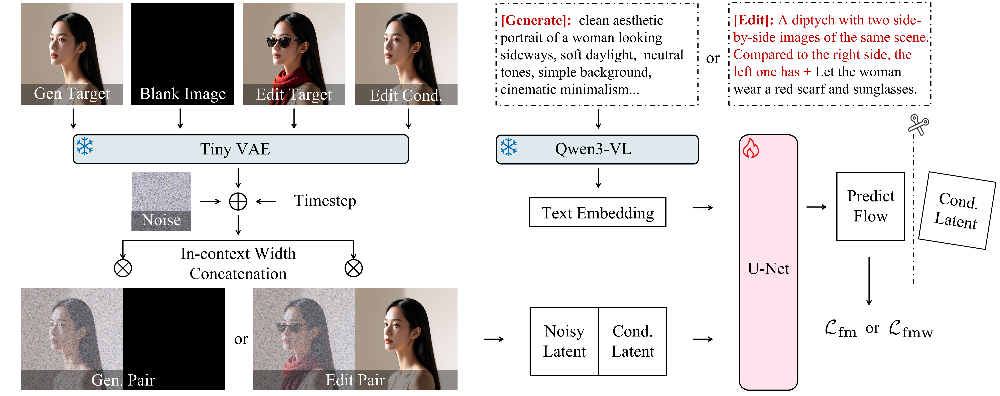
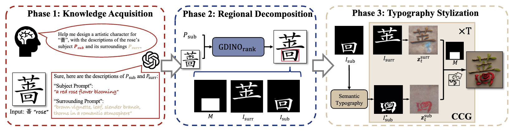
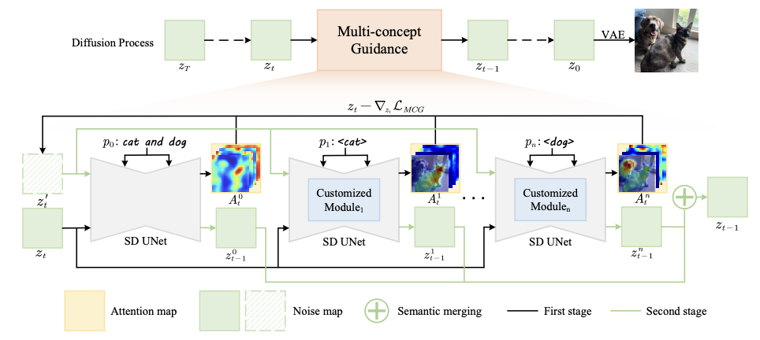
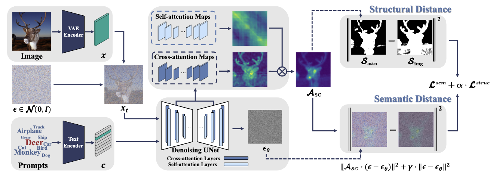
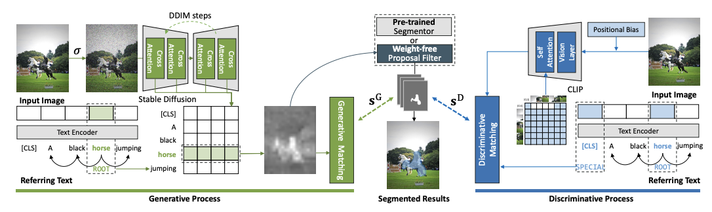
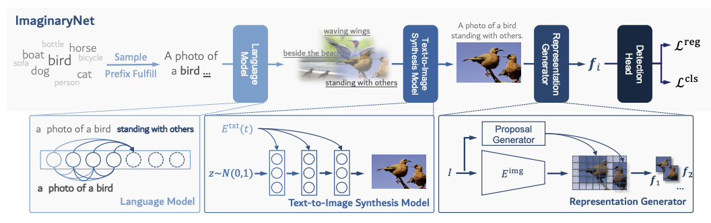

About Me
I am a Ph.D. student at University College London, supervised by Assoc. Prof. Jagmohan Chauhan. I received my M.Eng. in Computer Science and Technology and B.Eng. in Artificial Intelligence from Harbin Institute of Technology, where I was advised by Prof. Wangmeng Zuo. My research focuses on on-device and efficient GenAI.
News
- [2026.08] DreamLite is accepted by ECCV 2026.
- [2026.03] 🎉 We have released the project page for DreamLite! You can find the code, demos, and more details here.
- [2025.09] One paper is accepted by WACV 2026.
- [2025.09] Started an internship at ByteDance.
- [2025.04] Started an internship at TAL.
- [2025.02] One paper is accepted by CVPR 2025.
- [2024.03] One paper is accepted by ICME 2024 Oral.
- [2023.01] One paper is accepted by ICLR 2023.
Education
- Ph.D. student, University College London
- Supervisor: Assoc. Prof. Jagmohan Chauhan - Aug. 2023 - Mar. 2026, M.Eng. in Computer Science and Technology, Harbin Institute of Technology
- Advisor: Prof. Wangmeng Zuo - Aug. 2019 - Jun. 2023, B.Eng. in Artificial Intelligence, Harbin Institute of Technology
Experiences
-
Sep. 2025 - Aug. 2026, Intelligent Creation Lab, ByteDance
- Research Intern (Efficient and On-Device Generative AI) -
Apr. 2024 - Sep. 2025, Beijing Century TAL Education Technology Co., Ltd.
- Research Intern (Generative AI and Text-to-SVG Video) -
Nov. 2022 - Jul. 2023, TikTok, ByteDance
- Machine Learning Engineer Intern (Multi-Task Learning and Video Auto-Moderation) -
Mar. 2024 - Present, International Telecommunication Union (ITU)
- Youth Envoy for Generation Connect
Publications

DreamLite: A Lightweight On-Device Unified Model for Image Generation and Editing
Kailai Feng, Y Wei, B Chen, Y Pan, H Ye, S Liu, C Yan, Y Gao, W Zuo
European Conference on Computer Vision, ECCV 2026
[Project Page][Code]




Ref-Diff: Zero-shot Referring Image Segmentation with Generative Models
M Ni, Y Zhang, Kailai Feng, X Li, Y Guo, W Zuo
Science China Information Sciences, 2026
[Paper]

Awards
Samsung Scholarship (top 0.18%), 2024
Special Prize of School Scholarship, 2024
Tencent Scholarship, 2024
Special Prize of School Scholarship, 2023
Outstanding Graduate of Harbin Institute of Technology, 2023